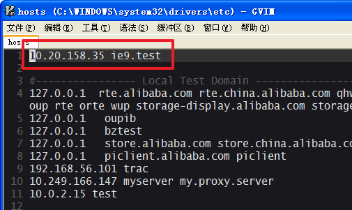
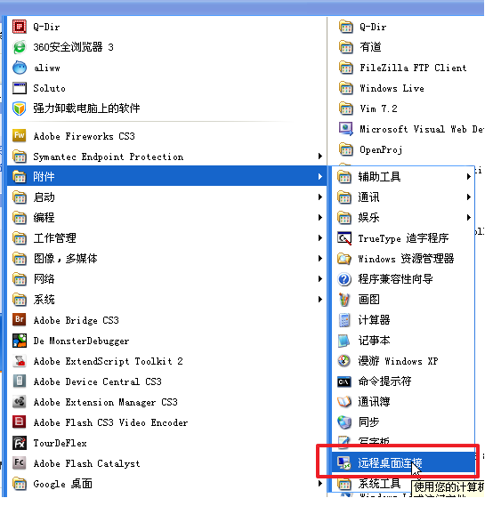
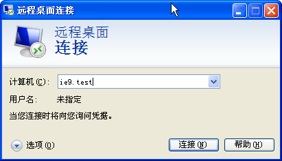
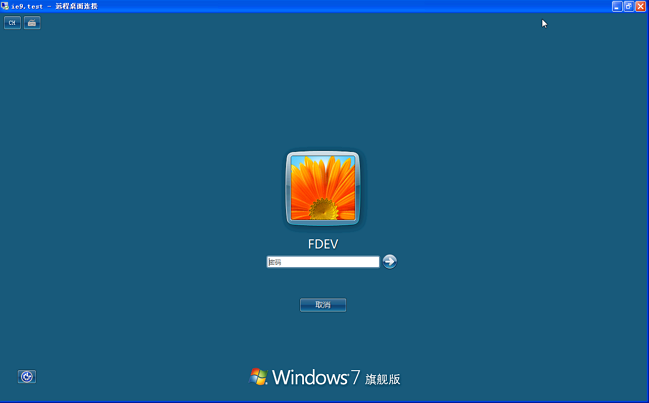
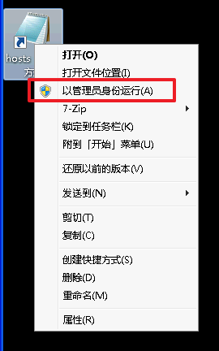
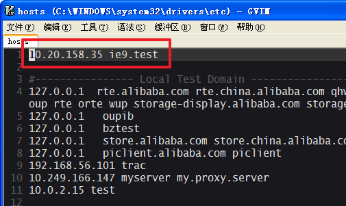
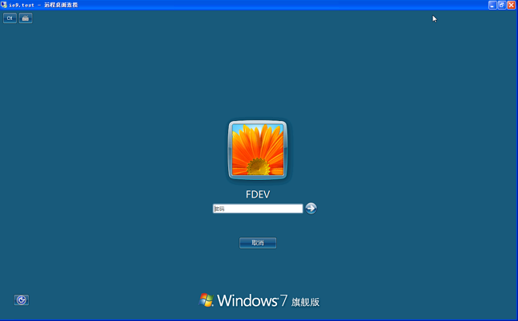

- 步骤1：绑定测试机ip
10.20.158.35 ie9.test - 步骤2：运行 开始-程序-远程桌面连接 
- 步骤3：主机名称填“ie9.test” 
- 步骤4：在虚拟主机登录界面，选择FDEV用户，填入密码：
hello1234 - 步骤5（可选）：在虚拟主机中修改host绑定。右键用管理员权限执行。 
- 没了，可以开始测试了..
10.20.158.35 ie9.test

hello1234
